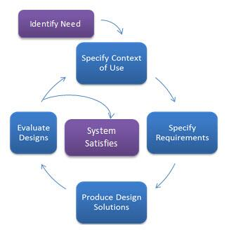

The User-centered design (UCD) process outlines the phases throughout a design and development life-cycle all while focusing on gaining a deep understanding of who will be using the product. The international standard 13407 is the basis for many UCD methodologies. It’s important to note that the UCD process does not specify exact methods for each phase.
User-Centered Design Process
According to Userfocus , there are multiple principles that underlie user centered design. Design is based upon an explicit understanding of users, tasks, and environments; is driven and refined by user-centered evaluation; and addresses the whole user experience. The process involves users throughout the design and development process and it is iterative. And finally, the team includes multidisciplinary skills and perspectives.
 The following are the general phases of the UCD process:
- Specify the context of use: Identify the people who will use the product, what they will use it for, and under what conditions they will use it.
- Specify requirements: Identify any business requirements or user goals that must be met for the product to be successful.
- Create design solutions: This part of the process may be done in stages, building from a rough concept to a complete design.
- Evaluate designs: Evaluation - ideally through usability testing with actual users - is as integral as quality testing is to good software development.
There are many variations of the UCD process. It can be incorporated into waterfall, agile, and other approaches. Depending on your needs, the user-centered design process is composed of several methods and tasks. What you are developing, your requirements, team, timeline, and the environment in which you are developing will all help determine the tasks you perform and the order in which you perform them.